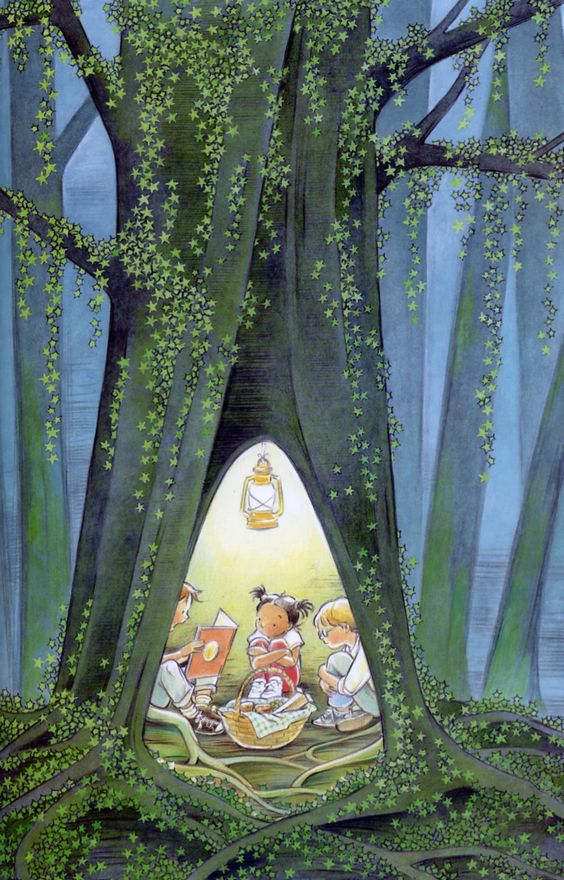
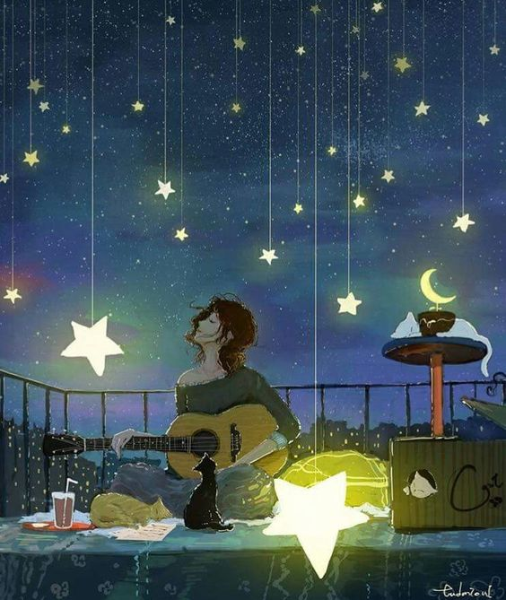

A poesia é o que alimenta a alma. Tempera o dia. Acalenta os corações , acalma. Ou agita quem precisa de folia. Ah… a Poesia! Mas, para ser, precisa ser lida, declamada, tirada do papel, da cabeça, do chapéu… Precisa que alguém lhe empreste a voz e o coração. Ouça, com atenção, os poeminhas da semana, pois é puro amor que emana!
Quando as crianças brincam E eu as oiço brincar, Qualquer coisa em minha alma Começa a se alegrar. E toda aquela infância Que não tive me vem, Numa onda de alegria Que não foi de ninguém. Se quem fui é enigma, E quem serei visão, Quem sou ao menos sinta Isto no coração.

Vive tu, meu menino,
os belos anos
Junto dos teus,
na doce companhia
Do que há de melhor em
corações humanos
E faze deste dia eterno dia
(…)
Depois, por súbito silêncio tomadas,
Vão em fantasia perseguindo
A criança-sonho em sua jornada
Por uma terra nova e encantada,
A tagarelar com bichos pela estrada
— Ouvem crédulas, extasiadas.
E sempre que a história esgotava
Os poços da fantasia,
E debilmente eu ousava insinuar,
Na busca de o encanto quebrar:
“O resto, para depois…”
“Mas já é depois!”
Ouvia as três vozes alegres
a gritar. (…)